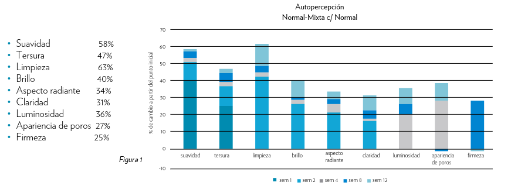
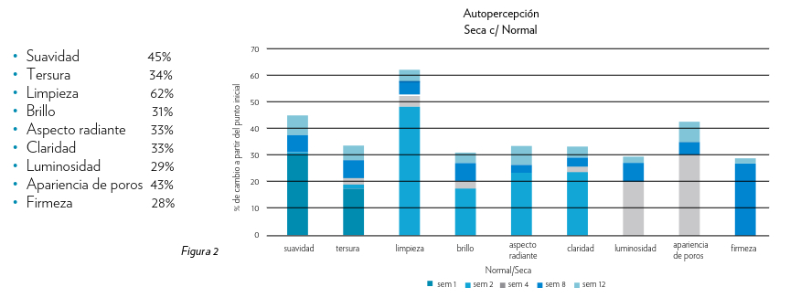
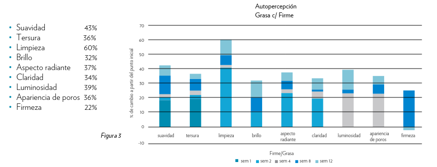

Lumispa
Dispositivo de limpieza facial profunda para una piel radiante y rejuvenecida.
INTRODUCCIÓN
Nu Skin creó un nuevo dispositivo para el cuidado de la piel que puede mejorar la apariencia de la piel mientras la limpia. Lo hace a través de la tecnología de Oscilación por Micropulsaciones, un movimiento de oscilación inversa pulsante de 15 Hz. Esto da como resultado un movimiento único de la piel que es una interacción entre la superficie de silicona y los productos tópicos especialmente creados. Evaluamos los beneficios de este movimiento en la apariencia de la piel a lo largo de una evaluación clínica de 12 semanas.
RESULTADOS
Los sujetos observaron mejorías estadísticamente significativas en cuanto a las características visibles de belleza de la piel incluyendo suavidad, tersura, limpieza, aspecto radiante, claridad, luminosidad, aspecto de los poros y firmeza de la piel al final y/o durante todo el estudio. Las mejorías en las características variaron un poco entre cada grupo y mostraron diferentes respuestas en diferentes tipos de piel. Las mejorías en el número de características y su intensidad se extendieron a lo largo del estudio de 12 semanas.
Piel Normal a Mixta
En el tipo de piel normal a mixta utilizando un producto tópico formulado para las necesidades de la piel y el cabezal de tratamiento normal se notaron las siguientes mejorías en la semana 12.
Piel Seca
En el tipo de piel seca utilizando un producto tópico formulado para las necesidades de la piel y el cabezal de tratamiento normal se notaron las siguientes mejorías en la semana 12.
Piel Grasa
En el tipo de piel grasa utilizando un producto tópico formulado para las necesidades de la piel y el cabezal de tratamiento firme se notaron las siguientes mejorías en la semana 12.
